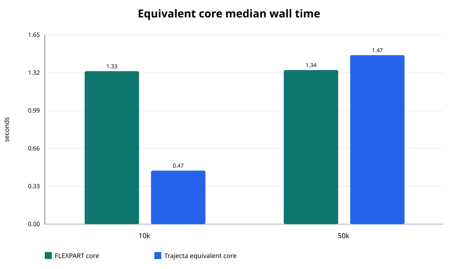
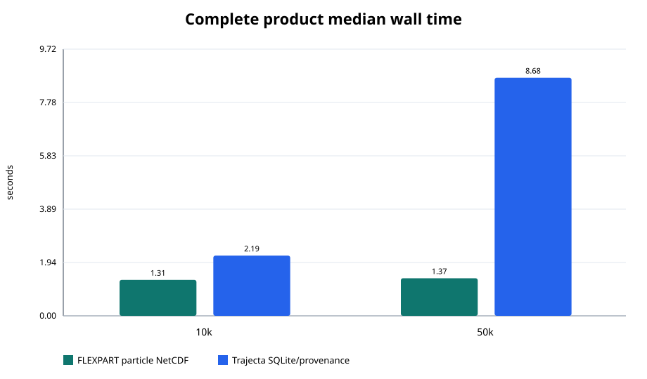
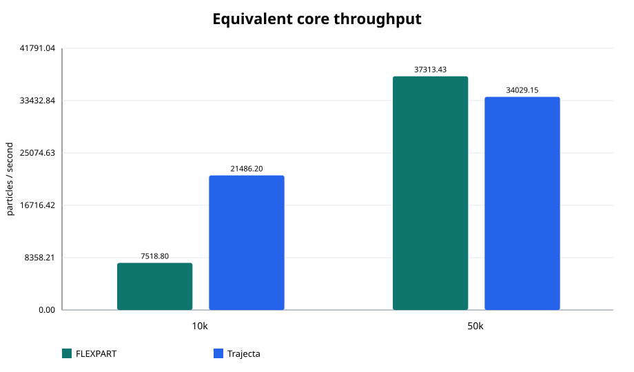
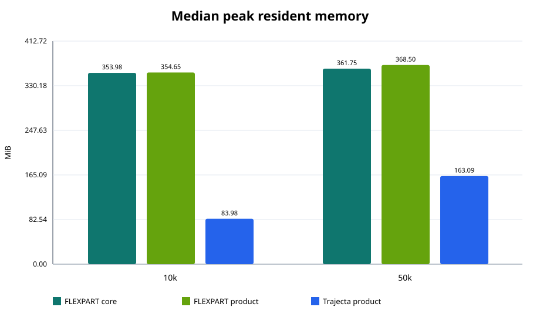
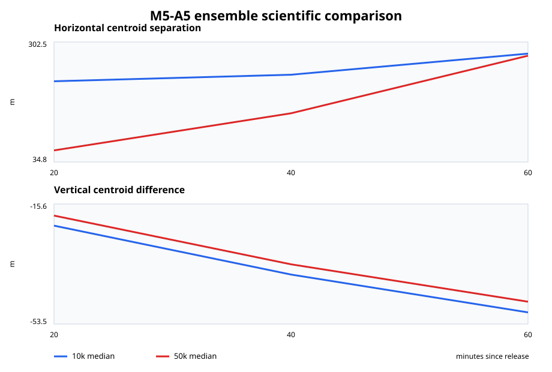

Frozen data and charts¶
The publication bundle contains the aggregate comparison, the meteorological alignment record, two analysis-ready CSV files, and five static Scalable Vector Graphics (SVG) charts. The files are committed with the documentation, so a chart remains tied to the same rows when the site is rebuilt.
The source aggregate has SHA-256:
Download the raw files¶
| File | Contents |
|---|---|
| M5_A5_FLEXPART_COMPARISON.json | Complete host and workload contract, executable identities, all run records, medians, scaling, scientific summaries, and check status |
| M5_A5_METEOROLOGY_EQUIVALENCE.json | Source and staged file identities, array shapes, common-field classifications, GRIB packing checks, and alignment results |
| M5_A5_TIMINGS.csv | One row per warm-up or formal timing sample with wall time, RSS, CPU time, filesystem counters, mode, and order |
| M5_A5_SCIENCE.csv | One row per population, repetition, and common output time with the five cross-model ensemble measures |
| PUBLICATION_MANIFEST.json | Source aggregate hash and SHA-256 for every publication chart |
The raw/original-charts directory retains charts emitted by the formal run.
The publication copies below are regenerated from the aggregate. Their
scientific x-axis uses the recorded 20, 40, and 60 minute output instants.
Read the timing CSV¶
M5_A5_TIMINGS.csv includes these columns:
| Column | Meaning |
|---|---|
particles |
Requested population size |
phase |
warmup or formal |
repetition |
Zero for warm-up; one through three for formal samples |
order_index |
Position of the mode in that repetition's rotated order |
mode |
flexpart-core, flexpart-product, or trajecta-product |
core_seconds |
Transport-oriented time when the mode exposes that boundary |
product_seconds |
Complete-product wall time when the mode exposes that boundary |
peak_rss_bytes |
Maximum resident set size reported for the process |
user_seconds, system_seconds |
CPU time from /usr/bin/time -v |
filesystem_inputs, filesystem_outputs |
Filesystem counters reported by the same tool |
Blank core or product cells indicate that the selected mode has only the other
timing boundary. Filter phase == formal before recalculating published
medians.
Read the science CSV¶
M5_A5_SCIENCE.csv contains three output rows per repetition. Unix times map to
the following elapsed times:
physical_time_unix |
Elapsed time |
|---|---|
| 1543634400 | 20 minutes |
| 1543635600 | 40 minutes |
| 1543636800 | 60 minutes |
The remaining columns are measured in metres or dimensionless ratios as stated in their names. Definitions and sign conventions are given in the scientific method.
Publication charts¶
Equivalent-core wall time¶

This chart compares the transport-oriented medians. The 10,000-particle values are 1.330 seconds and 0.465 seconds; the 50,000-particle values are 1.340 seconds and 1.469 seconds.
Complete-product wall time¶

This chart follows each program's selected product path. At 50,000 particles, the values are 1.370 seconds for the particle NetCDF product and 8.680 seconds for the Trajecta SQLite and provenance product.
Throughput scaling¶

Throughput divides particle count by equivalent-core median seconds. The chart shows the effect of fixed work in the short case as well as the population- dependent transport cost.
Peak resident memory¶

Peak RSS is the median process maximum from the three formal runs. Bytes are converted to MiB using 1,048,576 bytes per MiB.
Scientific ensemble comparison¶

The scientific chart displays horizontal centroid separation and signed vertical centroid difference for both particle counts. Detailed dispersion, transport-distance, and occupancy values remain in the CSV.
Rebuild the charts¶
From the repository's trajecta directory, use the Python environment prepared
for the workspace tools:
The command performs four checks:
- the frozen aggregate status and source artifact hashes are read;
- publication charts are regenerated in a temporary directory;
- every generated chart hash is compared with
PUBLICATION_MANIFEST.json; - English and Chinese validation asset trees are compared byte for byte.
It leaves the committed charts unchanged. A planned chart update begins with a new frozen aggregate or a reviewed rendering change, followed by regeneration and an updated publication manifest in the same commit.
Use the data in another analysis¶
The CSV files can be loaded directly by R, Python, Julia, a spreadsheet, or a
command-line table tool. Keep particles, phase, repetition, and mode as
grouping columns when recalculating performance summaries. For scientific
rows, group by particle count and physical time; repetitions are separate
observations even when their current values match.
When citing a table or derived plot, record the aggregate SHA-256 shown at the top of this page. It identifies the exact workload, executables, raw rows, and derived values used by this publication bundle.